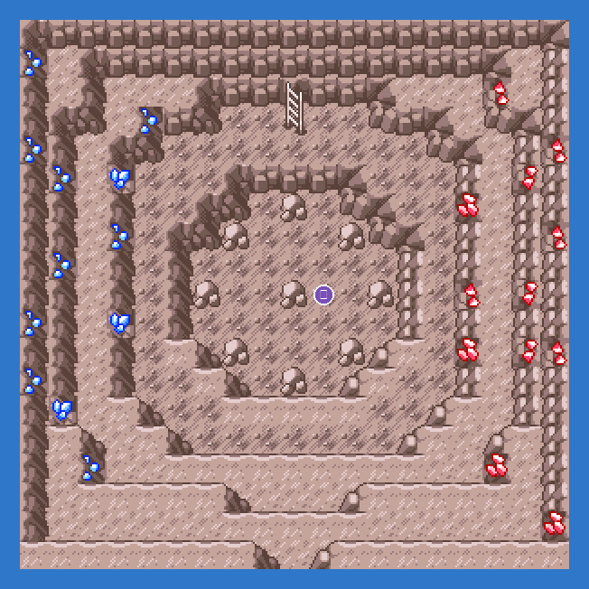

The lowest chamber. Mewtwo at level 70 after the Hall of Fame. Terapagos stands at the cave entrance at the same point.
Static encounters: walk up and press A. Caught = gone for good; beaten or fled = back next visit.